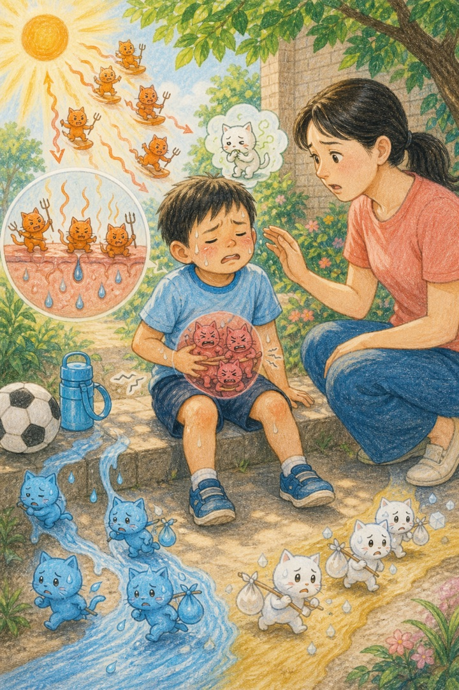
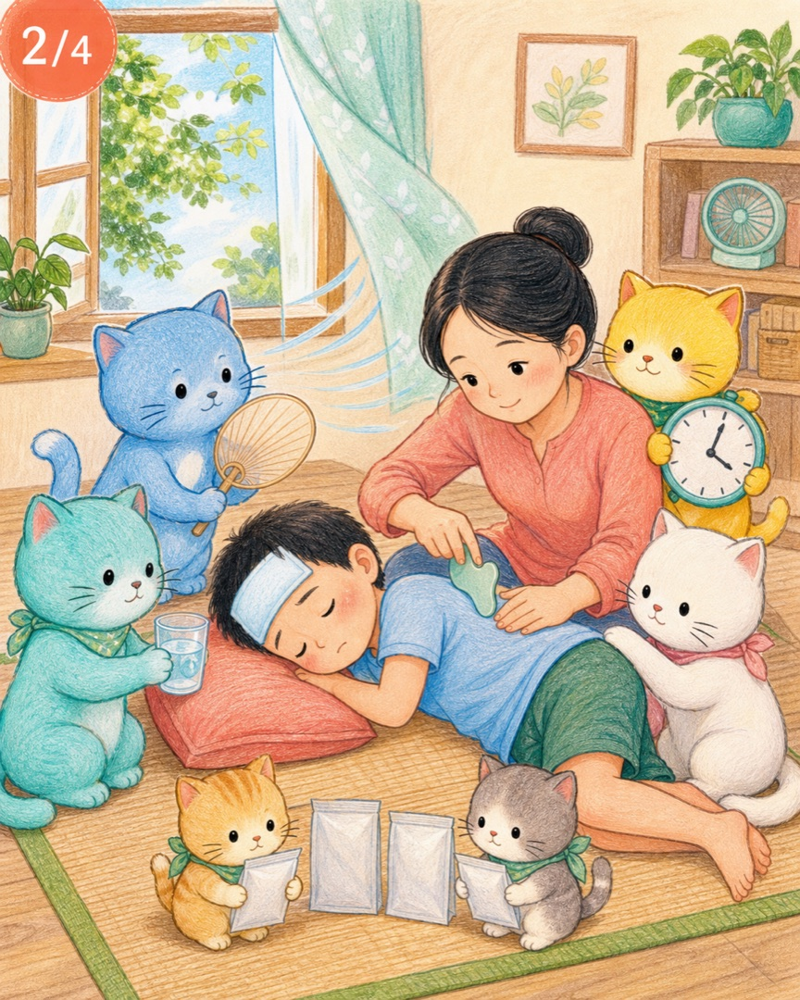
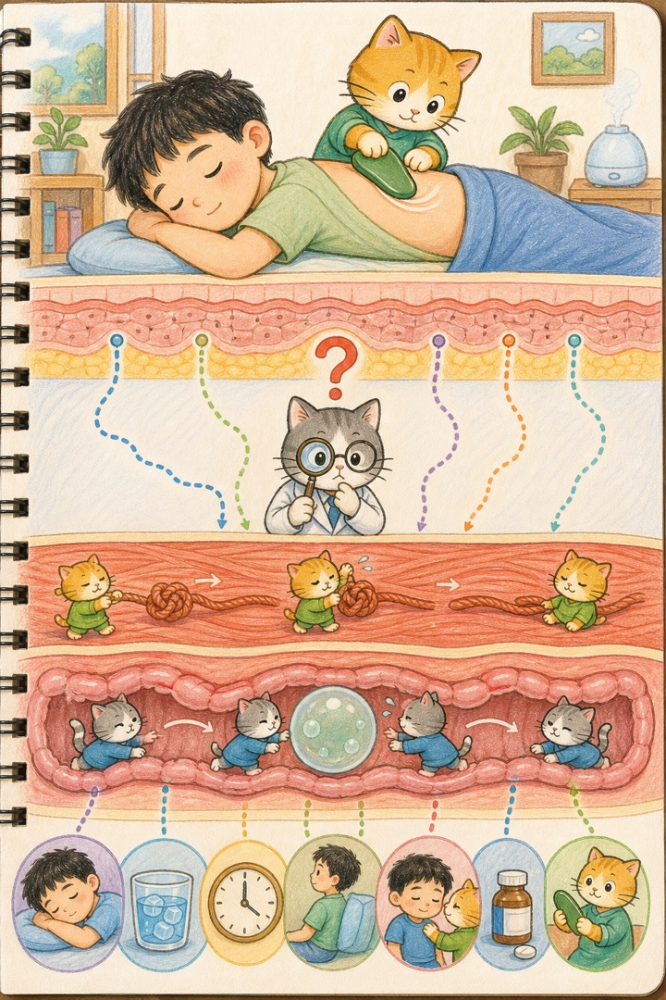
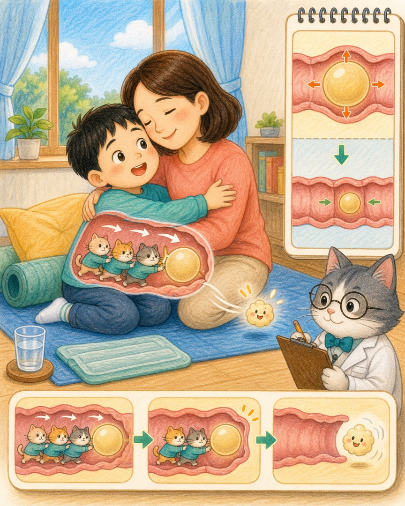
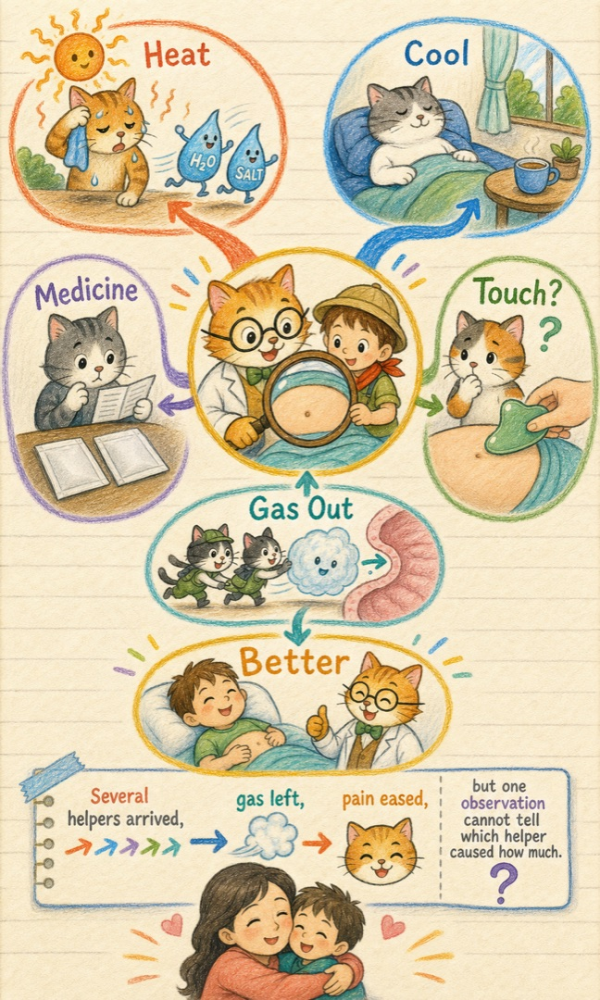

我们确实看见了
吃药、刮痧和休息之后，探险家排了气，肚子不痛了。这是可信的亲身观察。
热猫、人丹猫、午时茶猫、刮痧猫和屁屁猫都来了。究竟是谁帮了忙？喵博士决定不抢答，先跟探险家一起查线索。
你的身体真的经历了一串变化：先是热得难受，后来吃了药、休息、刮痧，再后来气体排出去，疼痛减轻了。这些都是重要线索。
你还发现了一个特别了不起的问题：刮痧发生在皮肤上，疼痛却在肚子里，它们之间究竟有没有一座看不见的桥？
在我们的世界里，那其实是……身体为了把多余的热送出去，打开了许多“汗水小门”。蓝色水猫和白色盐猫跟着汗跑出身体。如果天气太热、活动太久，身体补充得又不够快，肚子也可能出现恶心、不舒服或肌肉痉挛。

第一条比较牢靠的线索：热相关不适本来就可能伴随恶心、腹部痉挛或疼痛。到阴凉处休息、降温并补充液体，是身体救援的重要部分。
那天并不是只有“刮痧猫”出现。按照探险家的记录，事情依次发生了：

人丹猫和午时茶猫当然也在现场。但口服药需要经过溶解、吸收和身体处理，不像按下电灯开关那样立刻完成任务。而且没有把同一天分成几个完全相同的实验，我们就无法知道两种药各自帮了多少、刮痧帮了多少，还是身体在休息和降温后本来就开始恢复。
刮痧工具碰到的是皮肤和皮下组织。肠道里的气体则待在腹腔里的肠管中间。皮肤下面并没有一条“刮痧通道”，能把屁直接刮到出口。
不过，躺下来、改变姿势、被温柔照顾、紧张感下降，以及时间经过，都可能让身体的整体状态发生变化。与此同时，肠道本来就在一下一下收缩，推动里面的食物和气体前进。

吃药、刮痧和休息之后，探险家排了气，肚子不痛了。这是可信的亲身观察。
不能只凭这一次先后顺序，确定是刮痧直接让气体排出，也不能精确分出两种药和其他因素的贡献。
肠道是一条会缓慢收缩的柔软通道。气体聚在某一段时，可能把肠壁撑开，让人感觉胀、顶或痛。肠道猫一下一下把气泡推向出口，当气体排出去，原来被撑开的地方不再那么紧，不舒服就可能很快减轻。

如果肚子痛主要来自气体撑胀，那么换个姿势、走动后或自然排气后，也可能变舒服；如果疼痛来自别的原因，即使放了屁，也可能仍然痛。“放屁后缓解”是一条好线索，却不是所有腹痛的万能答案。
妈妈的功劳，不需要绑在某一块刮痧板上才成立。
真正重要的是：她看见了你的难受，马上停下别的事情来照顾你，陪着你，观察你的变化，直到你重新舒服起来。这份及时的发现、行动和陪伴，本身就是一支很强的救援队。
所以你的感谢一点也没有弄错。科学只是帮助我们把“妈妈救了我”和“究竟哪一步怎样起作用”分开来看：前一句是你亲身感受到的爱，后一句是值得继续调查的问题。

这就是喵博士与探险家共同找到的答案：妈妈召集了整支救援队，屁屁猫带走了撑胀，但只有诚实保留那个问号，我们才不会把“刚好接着发生”误认成“唯一的原因”。
下一次探险，你想不想和喵博士一起画一张“身体不舒服时，我看见了哪些线索”的侦探表？